J. Christopher Westland
Professor at the University of Illinois Chicago (UIC). Named a recipient of the prestigious Fulbright-García Robles U.S. Scholar Award for Mexico (2026–2027) — one of only three U.S. scholars selected. Currently visiting scholar at Universidad Anáhuac Mayab in Mérida, Yucatán, focusing on economic complexity networks, satellite and trade analytics, and technology commercialization with the TecniA incubator.
Fulbright-García Robles U.S. Scholar (2026–2027)
Host Institution: Universidad Anáhuac Mayab, Mérida, Yucatán, México
Prestigious Bilateral Appointment
I am honored to share that I have been named a recipient of the Fulbright-García Robles award for the 2026–2027 academic year. I am serving as one of only three Fulbright-García Robles U.S. Scholars selected for Mexico for this award cycle (the other two recipients are Anthropologists).
About the Fulbright-García Robles (COMEXUS) Award
The Fulbright-García Robles (COMEXUS) grant is an esteemed bilateral program between the United States and Mexico. Named after Nobel Peace Prize winner Alfonso García Robles, it is considered one of the "Crown Jewels" of the global Fulbright program due to the depth of diplomatic, economic, and cultural relationships it fosters between the two nations.
Because of the USMCA and our extensive shared border, this grant is viewed by both the U.S. Department of State and the private sector as a high-level training ground for the future of the North American corridor. I am grateful for the opportunity to contribute to the academic and professional links uniting our two countries.
Research: Economic Complexity Networks in the Yucatán
During my Fulbright year, I am based at Universidad Anáhuac Mayab in Mérida, Mexico. The Yucatán is currently the fastest-growing economy in Mexico. My research focuses on economic complexity networks across the region:
- Trade & Satellite Analytics: Mapping municipal product spaces, revealed comparative advantage (RCA), and industrial concentration using firm-level census records (DENUE/IMSS) and nighttime lights satellite data (VIIRS).
- The "Yucatán Connectome" Project: Evaluating how major transport infrastructure—specifically the Tren Maya rail network—reshapes regional economic geography and labor-market informality.
- Market Access Diagnostics: Modeling market-access gain against travel friction and train waiting times to identify true regional economic multipliers.
Collaborating with TecniA Technology Incubator
I also look forward to collaborating with Mexico’s technology incubator, TecniA, at Universidad Anáhuac Mayab to help promote, evaluate, and commercialize Mexican STEM innovations. This initiative bridges academic research with venture capital, patent analysis, and cross-border commercialization along the North American economic corridor.
Books & Software Gallery
Published monographs, statistical textbooks, and technology volumes
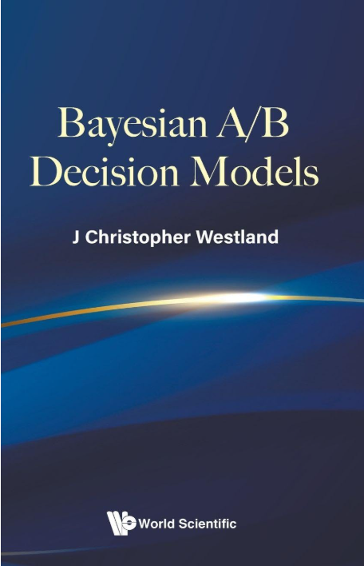
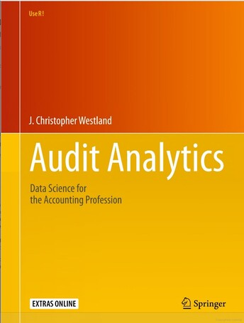
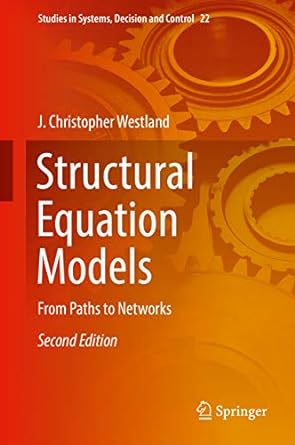
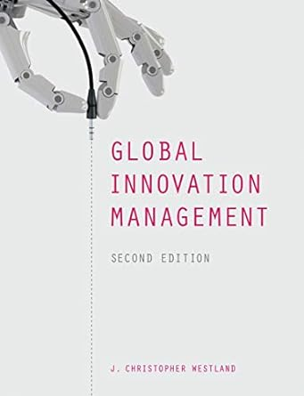
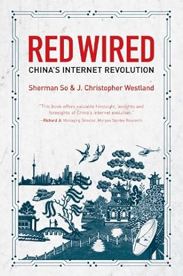
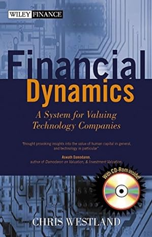
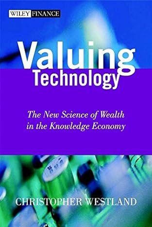
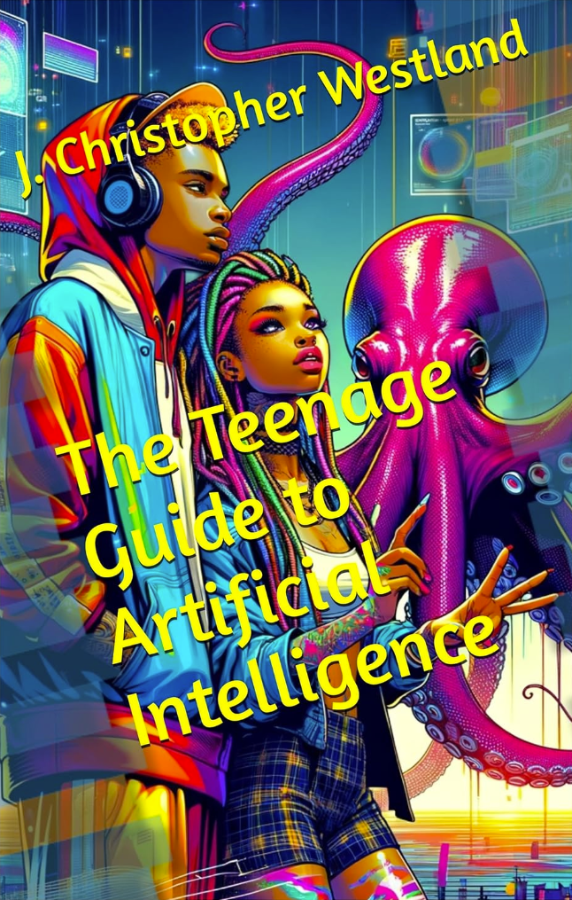
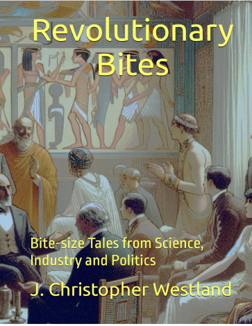
Editorial Appointments & Journal Leadership
Leading international scholarship in electronic commerce and digital systems
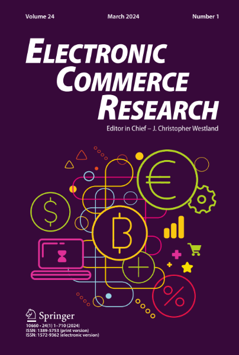
Electronic Commerce Research (Springer)
Editor-in-Chief (2013–present) • Impact Factor: 4.9 (2025) • CiteScore: 11 • Acceptance Rate: 13%
A leading peer-reviewed journal publishing ~300 articles/year with ~900K annual downloads across the globe. Covering algorithmic commerce, platform economics, AI in markets, and blockchain architecture.
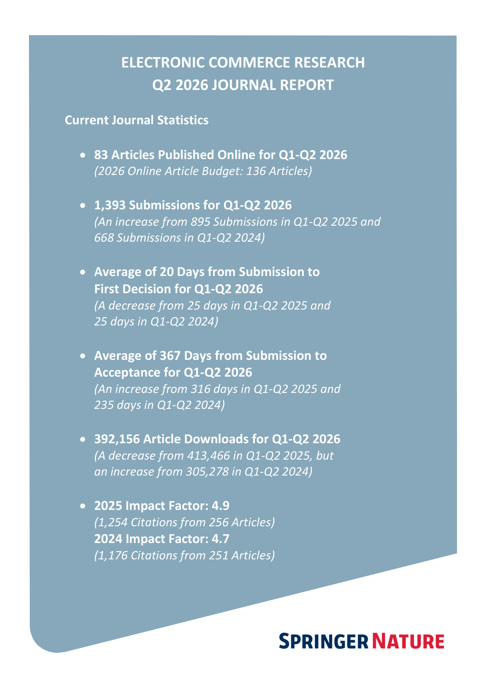
All Editorial Appointments
- Electronic Commerce Research (Editor-in-Chief, 2013–present)
- Electronic Commerce Research and Applications (Editor, 2006–2014)
- Scientific Reports, Associate Editor (IF: 4.6, 5th most-cited journal in the world)
- Information and Management (2011), Associate Editor
- Social Science Research Network: Information Systems & eBusiness (2004–2014), Board
- Management Science (1995–2002), Associate Editor
- Information Systems Research (1996–2000), Associate Editor
- Electronic Markets (2001–present), Associate Editor
- Telecommunications Systems (2003–present), Associate Editor
- International Journal of Online Marketing (2010–present), Associate Editor
- International Journal of Electronic Commerce (1996–present), Associate Editor
- Electronic Commerce Research Journal (2001–present), Associate Editor
- International Journal of Internet & Enterprise Management (2003–present), Associate Editor
- International Journal of E-Entrepreneurship and Innovation (2011), Associate Editor
- International Review of Management (2004–present), Associate Editor
Retrospective & Life in Pictures
Astrophotography, organ & piano performance, motorcycle expeditions, and personal memories
🔭 Astrophotography & Deep Sky Observing
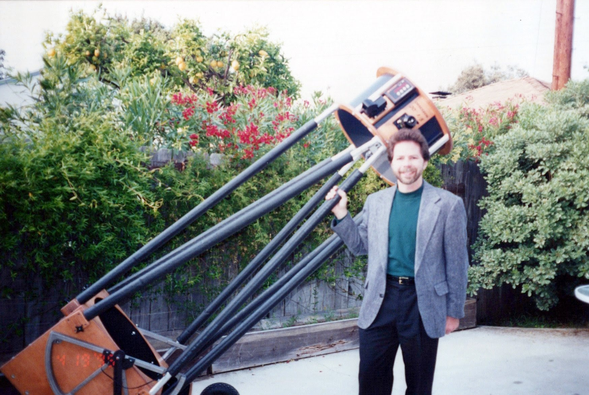
🎹 Music: Pipe Organ & Piano
🏍️ Wheels & Motorcycle Expeditions
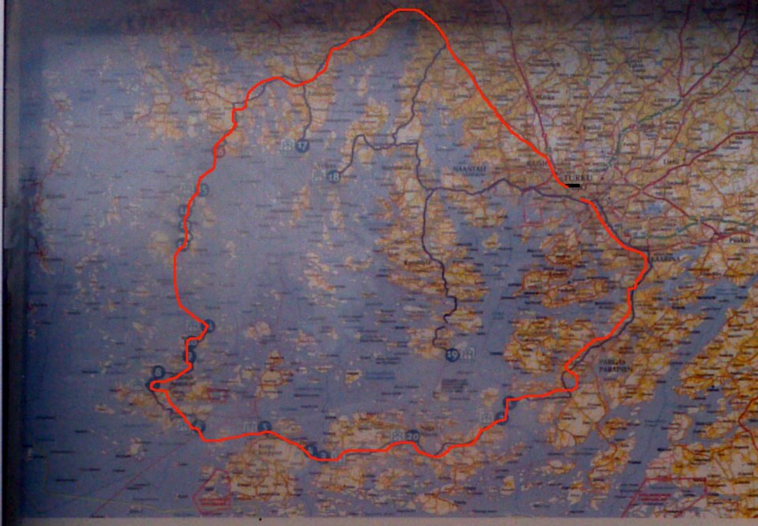
📸 Memories & Early Academic Career
🎙️ Podcasts & Audio Series
Original technology history podcast, thought-provoking innovation essays, and featured guest interviews.
Westland on Technology is an acclaimed audio podcast and historical essay series that explores the fascinating history of technology, corporate strategy, innovation economics, and the often-accidental breakthroughs that shaped the modern world.
Hosted by technologist and decision-sciences professor J. Christopher Westland, each episode delivers concise, incisive narratives at the intersection of technology, finance, and human ingenuity:
- The Accidental Battery: How the demise of cassette tapes left Sony with empty plants that were repurposed to coat electrodes—commercializing the lithium-ion polymer battery.
- Bebop Jazz & Chord Contrafacts: How Charlie Parker used copyright economics and chord contrafacts to revolutionize modern jazz without paying royalties.
- Niche Technology Survival: Why vacuum tubes survived the solid-state transistor revolution to command luxury prices among modern audiophiles.
- Cryptography & Intelligence: Alan Turing, Marian Rejewski, and the breaking of Enigma at Bletchley Park.
- Everyday Inventions: The curious, unfair history of screws, fasteners, typewriter keyboards (QWERTY), and office cubicles.
In this featured interview on the Million Dollar Stories Podcast, Professor Chris Westland joins host Mike Fallat to discuss his book Audit Analytics: Data Science for the Accounting Profession (Springer Use R! series).
Professor Westland outlines the critical crisis in modern accounting valuation—demonstrating how reported audited "Book Value" has collapsed to less than 10% of total market capitalization for giants like Apple, Microsoft, Amazon, and Nvidia. He discusses how modern open-source analytical computing with R and Python allows forensic auditors and quantitative analysts to cut through corporate opacity and uncover anomalies in massive business datasets.
📚 The 52 Episodes & Historical Essays
All 52 episodes and historical essays are available to read interactively on the Shiny Dashboard Episode Reader.
Refereed Publications (102 Publications)
Peer-reviewed scholarship spanning digital economics, machine learning, e-commerce, and audit analytics
Recent Publications (2025–2026)
High-Impact Selected Articles
The complete catalog of all 102 refereed publications is documented in the downloadable Curriculum Vitae (PDF) and the interactive Shiny Web App.
Curriculum Vitae
Updated September 2026 | J. Christopher Westland
Education
- Ph.D., Computers & Information Systems, University of Michigan, 1987
- MBA, Accounting, Indiana University, 1973
- BA, Mathematics (Physics & Chemistry minors), Indiana University, 1971
- Languages: English, Mandarin Chinese, Spanish
Awards, Certificates & Honoraries
- Certified Public Accountant (Illinois License 065.035982)
- Illinois CPA Society
- Beta Gamma Sigma (Business Honorary Society)
- Mensa International; American Mensa
- Fulbright Specialist Award, Colombia, 2024
- Fulbright Specialist Roster appointment by U.S. Department of State
- Fulbright-García Robles US Scholar, Mexico, 2026–2027 *(One of only three U.S. Scholars for Mexico)*
- 1000-Talents Plan Award, China, 2013–2016
- High Level Foreign Expert designation, China
- Stanford University’s list of World’s Top 2% Scientists
Career History
- Professor, IDS, University of Illinois – Chicago, 2007–present
- Fulbright-García Robles U.S. Scholar & Visiting Scholar, Universidad Anáhuac Mayab, Mérida, México, 2026–2027
- High-level Foreign Expert, P.R.China (under 1000-Talents Plan) Beihang University, 2012–2017
- Adjunct Professor, XiDian University, Xian, P.R.China, 2017–present
- Adjunct Professor, Shanghai University, Shanghai, P.R.China, 2019
- Adjunct Professor, University of Science and Technology of China, Hefei, P.R.China, 2013–2016
- Adjunct Professor, Key Center for e-Health, Harbin Institute of Technology, Harbin, P.R.China, 2011–present
- Adjunct Professor, SWUFE Key Lab of Financial Intelligence, Chengdu, P.R.China, 2007–present
- Head, IDS, University of Illinois – Chicago, 2000–2007
- Professor, HK University of Science & Technology, 1995–2007; Visiting Professor Tsinghua University, Beijing, 2002–2003
- Visiting Professor, Nanyang Technological University, Singapore, 2002
- Associate Professor with Tenure, Marshall School, University of Southern California, 1994–1996
- Assistant Professor, Marshall School, University of Southern California, 1985–1988
- Assistant Professor, Accounting, Eastern Michigan University, 1986–1987
- PhD Student, Computers and Information Systems, University of Michigan, 1981–1987
- Database Admin & Security Manager, Rockwell International, 1977–1981
- IS Audit Manager, Republic Life, Dallas, 1976–1977
- Accounts Payable / Payroll Manager, Federated Department Stores, Dallas, 1975–1976
- Auditor, IS Consultant, Touche Ross, Chicago, 1973–1975
Ph.D. Students
- Fabiha Jalal
- Keran Zhao (graduated 2021)
- Pouya Rahmati (graduated 2020)
- Poornima Krishnan (graduated 2010)
- Sanjeev Jha (graduated 2009), University of New Hampshire
- Kirill Yurov (graduated 2009), Nova University
- Carsten Paasch (graduated 2008), Senior VP – Information Security, Standard Chartered Bank
- Wendy Hui (graduated 2005), Nottingham University
- Eric See-to (graduated 2005), Research Fellow, University of Lancaster Business School, U.K.
- Hilton Chan (graduated 2000), Hong Kong Police, Head of Special Investigations
- Eric Law (graduated 1999), CEO, Boncle, Inc. (secure internet platforms) Santa Clara, CA